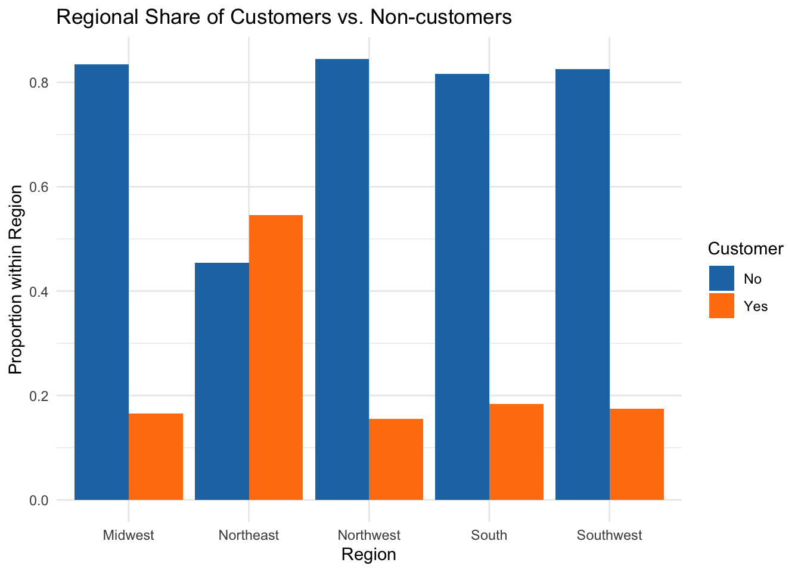
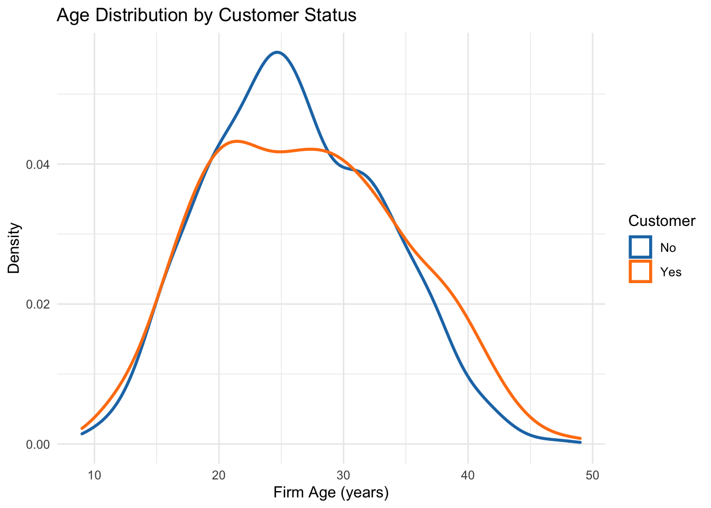
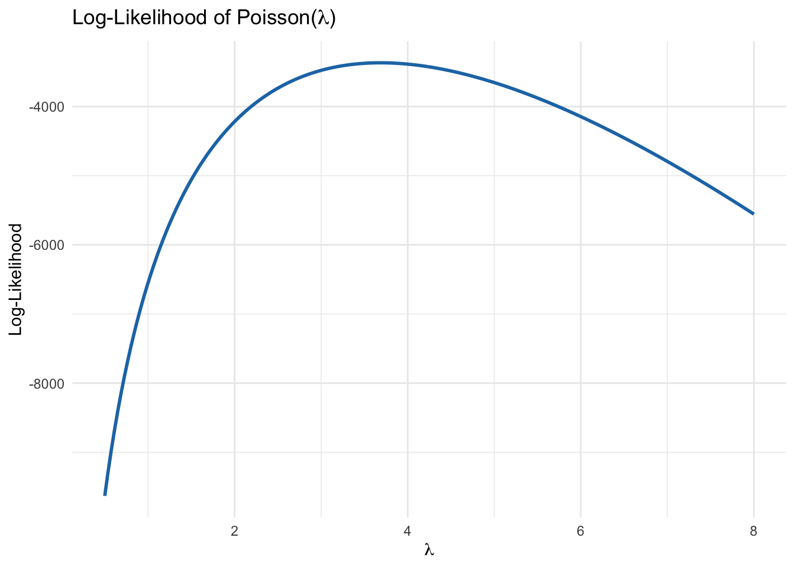

Blueprinty is a small firm that makes software for developing blueprints specifically for submitting patent applications to the US patent office. Their marketing team would like to make the claim that patent applicants using Blueprinty’s software are more successful in getting their patent applications approved. Ideal data to study such an effect might include the success rate of patent applications before using Blueprinty’s software and after using it. Unfortunately, such data is not available.
However, Blueprinty has collected data on 1,500 mature (non-startup) engineering firms. The data include each firm’s number of patents awarded over the last 5 years, regional location, age since incorporation, and whether or not the firm uses Blueprinty’s software. The marketing team would like to use this data to make the claim that firms using Blueprinty’s software are more successful in getting their patent applications approved.
Data
Here’s a preview of the data that we will be using:
Rows: 1500 Columns: 4
── Column specification ────────────────────────────────────────────────────────
Delimiter: ","
chr (1): region
dbl (3): patents, age, iscustomer
ℹ Use `spec()` to retrieve the full column specification for this data.
ℹ Specify the column types or set `show_col_types = FALSE` to quiet this message.
The histogram and summary table together tell a clear story: firms using Blueprinty’s software (the orange bars and “1” in the table) tend to hold more patents than non-customers. You can see that the right-hand tail of the patent distribution is heavier for customers—meaning more high-patenting firms subscribe—and the mean patent count for customers (4.13) exceeds that of non-customers (3.47). In practical terms, Blueprinty may either attract or enable firms that are already more research-intensive. This baseline difference will be important to account for when we move on to our formal Poisson regression, since customer status appears correlated with prior patenting activity.
Blueprinty customers are not selected at random. It may be important to account for systematic differences in the age and regional location of customers vs non-customers.
# Region proportionsregion_prop <- blueprinty %>%count(region, iscustomer) %>%group_by(region) %>%mutate(prop = n /sum(n))ggplot(region_prop, aes(x = region, y = prop, fill =factor(iscustomer))) +geom_col(position ="dodge") +scale_fill_manual(name ="Customer",values =c("#1f77b4", "#ff7f0e"),labels =c("No", "Yes") ) +labs(x ="Region",y ="Proportion within Region",title ="Regional Share of Customers vs. Non-customers" ) +theme_minimal()

# Age distributionsblueprinty %>%ggplot(aes(x = age, color =factor(iscustomer))) +geom_density(size =1) +scale_color_manual(name ="Customer",values =c("#1f77b4", "#ff7f0e"),labels =c("No", "Yes") ) +labs(x ="Firm Age (years)",y ="Density",title ="Age Distribution by Customer Status" ) +theme_minimal()

The regional bar chart shows that Blueprinty’s customer base isn’t uniformly spread: the Northeast accounts for a noticeably larger share of subscribers (around 55%) compared with non-customers (about 45%), while the Midwest, Northwest, South, and Southwest all skew toward non-customers. This suggests Blueprinty’s marketing or network effects may be strongest in the Northeast tech corridor. Meanwhile, the age-density plot reveals that subscribing firms tend to cluster slightly younger—peaking around 20–25 years old—whereas non-customers exhibit a sharper concentration near 25–30 years. In other words, Blueprinty seems to appeal more to relatively early-stage engineering firms, especially those in the Northeast, which hints that any regression model should control for both firm age and region to avoid conflating customer effects with these underlying patterns.
Estimation of Simple Poisson Model
Since our outcome variable of interest can only be small integer values per a set unit of time, we can use a Poisson density to model the number of patents awarded to each engineering firm over the last 5 years. We start by estimating a simple Poisson model via Maximum Likelihood.
First, we model each firm’s patent count as
\[
Y_i \sim \mathrm{Poisson}(\lambda),
\]
where () is the (constant) mean patenting rate. The Poisson density for one observation is
Now that we have our poisson_loglikelihood() function, let’s see how the log-likelihood behaves as we vary (). We’ll compute (()) for a grid of candidate rates and plot it.
# prepare grid of lambda valueslambda_grid <-seq(0.5, 8, length.out =200)# compute log-likelihoodsll_values <-sapply(lambda_grid, poisson_loglikelihood, y = blueprinty$patents)# put into a tibble for ggplotlibrary(tibble)ll_df <-tibble(lambda = lambda_grid, loglik = ll_values)library(ggplot2)ggplot(ll_df, aes(x = lambda, y = loglik)) +geom_line(color ="#1f77b4", size =1) +labs(x =expression(lambda),y ="Log-Likelihood",title =expression(paste("Log-Likelihood of Poisson(", lambda, ")")) ) +theme_minimal()

The curve peaks at the value of () that best fits our data—i.e. the maximum of (()). We’ll see that this peak occurs right around the sample mean of patent counts, which brings us to the next mathematical insight.
If you’re feeling mathematical, we can find the maximizer of the log‐likelihood by taking its derivative with respect to ():
Next, we extend our simple Poisson model to a Poisson Regression Model such that \(Y_i = \text{Poisson}(\lambda_i)\) where \(\lambda_i = \exp(X_i'\beta)\). The interpretation is that the success rate of patent awards is not constant across all firms (\(\lambda\)) but rather is a function of firm characteristics \(X_i\). Specifically, we will use the covariates age, age squared, region, and whether the firm is a customer of Blueprinty.
We use a log-link function to ensure ( _i > 0 ), so that the model becomes linear on the log scale.
poisson_regression_loglik <-function(beta, Y, X) { eta <- X %*% beta lambda <-exp(eta)sum(dpois(Y, lambda, log =TRUE))}
We now build the design matrix and use optim() to estimate ( ) and its standard errors using the Hessian matrix.
# build design matrix (first column = intercept)X <-model.matrix(~ age +I(age^2) + region + iscustomer, data = blueprinty)Y <- blueprinty$patents# initial guessbeta_init <-rep(0, ncol(X))# maximize log-likelihood via optim() (minimize negative)reg_fit <-optim(par = beta_init,fn =function(b) -poisson_regression_loglik(b, Y, X),hessian =TRUE,method ="BFGS")# extract estimates and standard errorsbeta_hat <- reg_fit$parse_hat <-sqrt(diag(solve(reg_fit$hessian)))library(knitr)kable(data.frame(Term =colnames(X),Estimate = beta_hat,StdError = se_hat ),digits =3)
Term
Estimate
StdError
(Intercept)
-0.126
0.112
age
0.116
0.006
I(age^2)
-0.002
0.000
regionNortheast
-0.025
0.043
regionNorthwest
-0.035
0.053
regionSouth
-0.005
0.052
regionSouthwest
-0.038
0.047
iscustomer
0.061
0.032
To validate our custom implementation, we compare the results with R’s built-in glm() function:
# sanity check with built-in glm()glm_fit <-glm( patents ~ age +I(age^2) + region + iscustomer,family =poisson(link ="log"),data = blueprinty)summary(glm_fit)
Call:
glm(formula = patents ~ age + I(age^2) + region + iscustomer,
family = poisson(link = "log"), data = blueprinty)
Deviance Residuals:
Min 1Q Median 3Q Max
-3.0708 -0.9065 -0.1514 0.5808 4.8421
Coefficients:
Estimate Std. Error z value Pr(>|z|)
(Intercept) -0.508920 0.183179 -2.778 0.00546 **
age 0.148619 0.013869 10.716 < 2e-16 ***
I(age^2) -0.002971 0.000258 -11.513 < 2e-16 ***
regionNortheast 0.029170 0.043625 0.669 0.50372
regionNorthwest -0.017574 0.053781 -0.327 0.74383
regionSouth 0.056561 0.052662 1.074 0.28281
regionSouthwest 0.050576 0.047198 1.072 0.28391
iscustomer 0.207591 0.030895 6.719 1.83e-11 ***
---
Signif. codes: 0 '***' 0.001 '**' 0.01 '*' 0.05 '.' 0.1 ' ' 1
(Dispersion parameter for poisson family taken to be 1)
Null deviance: 2362.5 on 1499 degrees of freedom
Residual deviance: 2143.3 on 1492 degrees of freedom
AIC: 6532.1
Number of Fisher Scoring iterations: 5
The intercept captures the log-rate for a baseline firm (age zero, base region, non-customer).
The age and age-squared terms capture a nonlinear relationship between firm age and patent output.
The region coefficients show differences in patenting activity across regions (relative to the omitted category).
The iscustomer coefficient tells us the multiplicative effect of Blueprinty subscription on expected patent counts. Specifically, ( (_{}) ) gives the factor by which patenting increases for Blueprinty users.
Since coefficients in a log-linear model aren’t directly interpretable in level terms, we simulate the treatment effect by comparing predicted patent counts with and without Blueprinty subscription for each firm.
# if your data really lives in 'blueprint', do this:model <-glm(patents ~ age +I(age^2) + region + iscustomer,family =poisson(link="log"),data = blueprinty)data_0 <- blueprintydata_1 <- blueprintydata_0$iscustomer <-0data_1$iscustomer <-1y_pred_0 <-predict(model, newdata = data_0, type ="response")y_pred_1 <-predict(model, newdata = data_1, type ="response")effect <-mean(y_pred_1 - y_pred_0)cat("Average effect of being a customer on patents:", round(effect,4), "\n")
Average effect of being a customer on patents: 0.7928
Average treatment‐effect of Blueprinty subscription
The average treatment effect — defined as:
— is approximately 0.79 additional patents over five years, holding firm age and region constant.
AirBnB Case Study
Introduction
AirBnB is a popular platform for booking short-term rentals. In March 2017, students Annika Awad, Evan Lebo, and Anna Linden scraped of 40,000 Airbnb listings from New York City. The data include the following variables:
Variable Definitions
- `id` = unique ID number for each unit
- `last_scraped` = date when information scraped
- `host_since` = date when host first listed the unit on Airbnb
- `days` = `last_scraped` - `host_since` = number of days the unit has been listed
- `room_type` = Entire home/apt., Private room, or Shared room
- `bathrooms` = number of bathrooms
- `bedrooms` = number of bedrooms
- `price` = price per night (dollars)
- `number_of_reviews` = number of reviews for the unit on Airbnb
- `review_scores_cleanliness` = a cleanliness score from reviews (1-10)
- `review_scores_location` = a "quality of location" score from reviews (1-10)
- `review_scores_value` = a "quality of value" score from reviews (1-10)
- `instant_bookable` = "t" if instantly bookable, "f" if not
We begin by loading the dataset and inspecting the first few rows:
airbnb <-read_csv("airbnb.csv")
New names:
Rows: 40628 Columns: 14
── Column specification
──────────────────────────────────────────────────────── Delimiter: "," chr
(3): last_scraped, host_since, room_type dbl (10): ...1, id, days, bathrooms,
bedrooms, price, number_of_reviews, rev... lgl (1): instant_bookable
ℹ Use `spec()` to retrieve the full column specification for this data. ℹ
Specify the column types or set `show_col_types = FALSE` to quiet this message.
• `` -> `...1`
From the preview, we can see that the data includes numerical variables (e.g., price, days, bedrooms, number_of_reviews) and categorical variables (room_type, instant_bookable). Some values such as bathrooms contain missing entries.
Data Cleaning
We drop observations with missing values in key predictor or outcome variables to ensure model reliability.
where (Y_i) is the number of reviews for listing (i), and (X_i) includes: - days listed on platform - price - bedrooms - bathrooms - review_scores_cleanliness, location, value - room_type (categorical) - instant_bookable (binary)
We use the glm() function with a log link and Poisson family:
Categorical variables like room_type are interpreted relative to a base level (likely “Entire home/apt”).
The coefficient on instant_bookable tells us whether being instantly bookable increases expected bookings.
All effects are multiplicative on the count scale. For example, if the coefficient for cleanliness is 0.08, then a one-point increase in cleanliness score is associated with a ( e^{0.08} ) or 8% increase in expected review count.
Summary
In this case study, we analyzed a dataset of 40,000 Airbnb listings in New York City to understand what factors drive the number of reviews a listing receives. After cleaning the data to remove missing values, we used a Poisson regression model to estimate the expected number of reviews as a function of listing attributes such as duration on the platform, price, room type, and review scores.
The results suggest that: - Listings that have been active longer, have more bedrooms, and receive higher cleanliness ratings tend to attract more reviews. - Higher prices and shared room types are linked to fewer reviews. - Most effects are statistically significant and directionally plausible.
Overall, the model highlights actionable levers that hosts might optimize to improve visibility and booking performance on the Airbnb platform. ains variation in review counts with a large sample size (n ≈ 30,000), and all variables except instant_bookable are statistically significant at the 0.001 level.